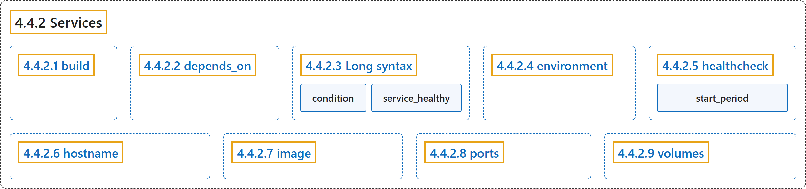

4.4.2 Services
Classification

Glossary
| Term | Definition | 中文翻译 | Source |
|---|---|---|---|
| 4.4.2 Services 服务 |
(No definition) | （无定义） | Docker Inc., n.d., "Services", documentation menu |
| 4.4.2.1 build build 键 |
"build specifies the build configuration for creating a container image from source, as defined in the Compose Build Specification." |
build 指定构建配置，用于从源码创建容器镜像，其定义见 Compose Build Specification。 |
Docker Inc., n.d., "build", para. 1 |
| 4.4.2.2 depends_on depends_on 键 |
"With the depends_on attribute, you can control the order of service startup and shutdown." |
使用 depends_on 属性，你可以控制服务启动和关闭的顺序。 |
Docker Inc., n.d., "depends_on", para. 1 |
| 4.4.2.3 Long syntax Long syntax |
(No definition) | （无定义） | Docker Inc., n.d., "Long syntax", documentation menu |
| condition condition 键 |
"condition: Sets the condition under which dependency is considered satisfied" |
condition：设置条件，在该条件下依赖被视为满足 |
Docker Inc., n.d., "Long syntax", para. 3 |
service_healthy依赖健康 |
"service_healthy: Specifies that a dependency is expected to be 'healthy' (as indicated by healthcheck) before starting a dependent service." |
service_healthy：指定依赖应处于 healthy 状态（由 healthcheck 判断），之后才启动依赖它的服务。 |
Docker Inc., n.d., "Long syntax", para. 3 |
| 4.4.2.4 environment environment 键 |
"The environment attribute defines environment variables set in the container." |
environment 属性定义环境变量，设置在容器中。 |
Docker Inc., n.d., "environment", para. 1 |
| 4.4.2.5 healthcheck healthcheck 键 |
"The healthcheck attribute declares a check that's run to determine whether or not the service containers are 'healthy'." |
healthcheck 属性声明一项检查，判断服务容器是否处于 healthy 状态。 |
Docker Inc., n.d., "healthcheck", para. 1 |
start_period启动宽限期 |
"interval, timeout, start_period, and start_interval are specified as durations." |
interval、timeout、start_period 和 start_interval 都用时长表示。 |
Docker Inc., n.d., "healthcheck", para. 3 |
| 4.4.2.6 hostname hostname 键 |
"hostname declares a custom host name to use for the service container." |
hostname 声明自定义主机名，供服务容器使用。 |
Docker Inc., n.d., "hostname", para. 1 |
| 4.4.2.7 image image 键 |
"image specifies the image to start the container from." |
image 指定镜像，用来启动容器。 |
Docker Inc., n.d., "image", para. 1 |
| 4.4.2.8 ports ports 键 |
"The ports is used to define the port mappings between the host machine and the containers." |
ports 用来定义端口映射，介于主机和容器之间。 |
Docker Inc., n.d., "ports", para. 1 |
| 4.4.2.9 volumes volumes 键 |
"The volumes attribute define mount host paths or named volumes that are accessible by service containers." |
volumes 属性定义挂载主机路径或命名卷，它们可被服务容器访问。 |
Docker Inc., n.d., "volumes", para. 1 |
References
Docker Inc. (n.d.). Services. Docker Docs. Retrieved November 2, 2026, from https://docs.docker.com/reference/compose-file/services/